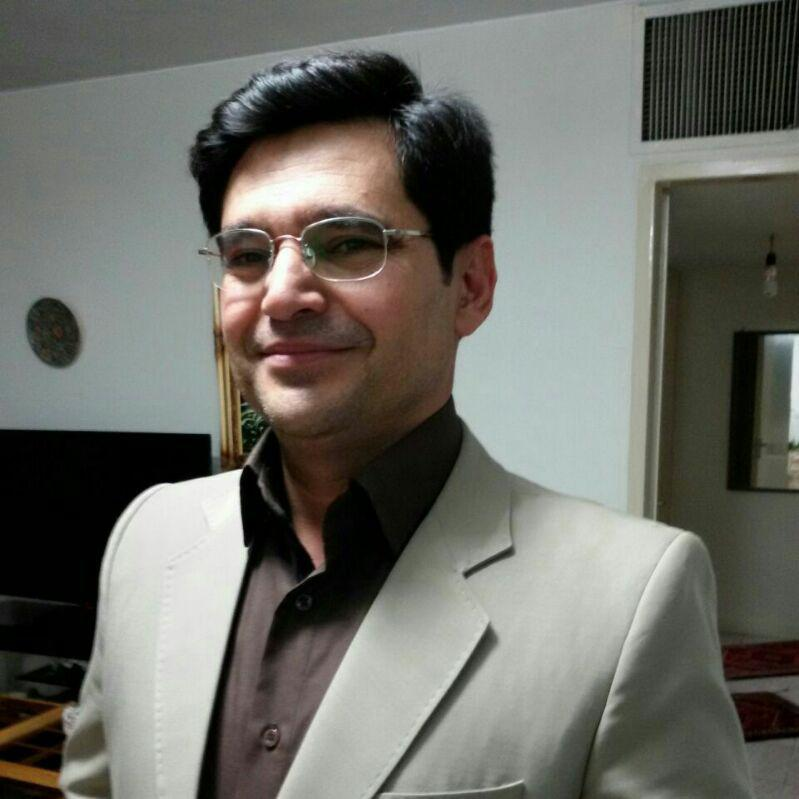

پروپوزال
Proposalالهام افشار
سوابق۱- رتبه اول بخش تحقیق و پژوهش جشنواره ملی مهر مبین
۲- دو دوره نفر برگزیده المپیاد دانشجویی مهندسی کامپیوتر غرب کشور
۳- نفر برگزیده آموزشی ورودی سال ۹۴ مهندسی کامپیوتر دانشگاه بوعلی سینا
۴- پذیرش بدون آزمون کارشناسی ارشد هوش مصنوعی و رباتیکز دانشگاه بوعلی (استعداد درخشان)
۵- عضو انجمن علمی مهندسی کامپیوتر دانشگاه بوعلی
۶- دستیار آموزشی دروس مبانی برنامه نویسی، برنامه نویسی پیشرفته، سیستم عامل و پایگاه داده
۷- طراحی اتوماسیون اداری فروشگاههای زنجیرهای آبشار
۸- طراح و توسعهدهنده بکاند فروشگاه اینترنتی آبشار آنلاین
۹- توسعهدهنده بکاند اتوماسیون کشوری خرید سازمانهای اداری و خصوصی (ساتک)
۱۰ - طراح و توسعهدهنده بکاند سامانه CRM مشتری
۱۱- تحلیل و توسعه وب سرور funql
رسالت ما :- کشور نباید گران اداره شود.- کشور باید متناسب با درآمد اداره شود.